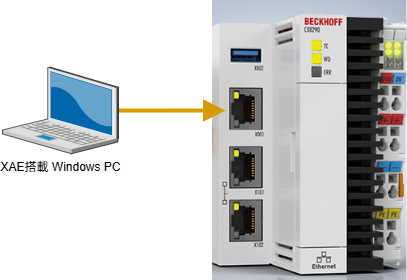

CX82xxシリーズの利用方法¶
Beckhoff RT Linuxの導入のドキュメントに従い、説明します。このドキュメントではOS無しのIPCに対してインストールする個所からの手順となっていますが、CX82xxにはあらかじめBeckhoff RT Linuxがインストール済みの状態で納入されます。ここからTwinCAT XAEで作成したプロジェクトを動作させるまでの手順を説明します。
設置と電源投入¶
設置方法はこちらをごらんください。
SDカードの取扱いについて
SDカードは故障時以外は抜かないでください。
CX8190のWindowsCEのように、ファイルをコピーするだけでは起動可能なディスクとなりません。
故障が疑われる場合は、こちらの手順にてSDカードを初期化することができます。
電源の配線方法はこちらのマニュアルをご覧ください。

接続¶
次図のとおりX001がリアルタイムではないEthernetポートです。こちらへXAEがインストールされたWindows PCを接続してください。
Tip
X101やX102は、PROFINET (TF627x), EtherNet/IP (TF628x), BACnet/IP (TF8020) 、などのリアルタイムEthernetが使えるほか、通常のソケット通信（TF6310）やADS等にも使うことができます。

IPC側に電源を供給するとSDカードからTwinCAT RT Linuxが起動します。この状態でXAEと接続したIPCのX001に割り当てられたIPアドレスを検索します。Windows側から次の通りPower shellからコマンドを入力して調べます。
PS > Get-NetNeighbor -LinkLayerAddress 00-01-05* -AddressFamily IPv6 ifIndex IPAddress LinkLayerAddress State PolicyStore ------- --------- ---------------- ----- ----------- 23 fe80::201:5ff:fea3:e942 00-01-05-**-**-** Stale ActiveStore
応答のあったIPAddress部分を参照して、次の通りSSHで接続を行います。
初回接続時は自己署名証明書で接続するか確認されます。
yesを入力して接続してください。PS > ssh Administrator@fe80::201:5ff:fea3:e942 <----- Administratorユーザで IPv6 のIPアドレスを指定してSSH接続 The authenticity of host 'fe80::201:5ff:fea3:e942 (fe80::201:5ff:fea3:e942)' can't be established. ED25519 key fingerprint is SHA256:YMDaKiSiJ+Hs89lJ2X/Ewq5QCPqT9gWwAac+IqOfxgw. This host key is known by the following other names/addresses: C:\Users\Takashii/.ssh/known_hosts:9: 192.168.3.45 Are you sure you want to continue connecting (yes/no/[fingerprint])? <--- "yes"
つづいてAdministratorのパスワード入力を求められます。工場出荷時は
1です。Warning: Permanently added 'fe80::201:5ff:fea3:e942' (ED25519) to the list of known hosts. Administrator@fe80::201:5ff:fea3:e942's password: <----- 工場出荷パスワード "1" を入力 Linux BTN-000tr9xa 6.14.9-rt3-bhf2 #1 SMP PREEMPT_RT Fri May 30 13:39:56 UTC 2025 aarch64 The programs included with the Debian GNU/Linux system are free software; the exact distribution terms for each program are described in the individual files in /usr/share/doc/*/copyright. Debian GNU/Linux comes with ABSOLUTELY NO WARRANTY, to the extent permitted by applicable law. Last login: Tue Jul 29 01:48:24 2025 from 192.168.3.23 Administrator@BTN-000*****:~$
IPアドレスが変わらない限り、次回からは自己署名証明書が保持されますので、パスワードを入力してログイン可能です。
PS > ssh Administrator@fe80::201:5ff:fea3:e942 Administrator@fe80::201:5ff:fea3:e942's password: <----- 工場出荷パスワード "1" を入力 Linux BTN-000tr9xa 6.14.9-rt3-bhf2 #1 SMP PREEMPT_RT Fri May 30 13:39:56 UTC 2025 aarch64 The programs included with the Debian GNU/Linux system are free software; the exact distribution terms for each program are described in the individual files in /usr/share/doc/*/copyright. Debian GNU/Linux comes with ABSOLUTELY NO WARRANTY, to the extent permitted by applicable law. Last login: Tue Jul 29 01:48:24 2025 from 192.168.3.23 Administrator@BTN-000*****:~$
上記で接続ができましたので、bash上で様々な操作が可能です。
接続を終えるときは、次のとおり
exitコマンドを発行してください。Administrator@BTN-000*****:~$ exit logout Connection to fe80::201:5ff:fea3:e942 closed. PS >
Tip
接続後は様々なテキスト形式の設定ファイルを編集してサーバの設定を行います。ターミナル上で利用可能なテキストエディタは、viおよび、nanoです。使い方がより直感的なのはnano, キー操作を多用し、操作効率が高いエディタはviです。本ドキュメントでは、主にnanoを使った例でコマンド紹介します。
パッケージマネージャの設定¶
Beckhoffの各種製品ソフトウェアは、事前にご登録いただきましたログイン名、およびパスワードを通して debian の apt パッケージマネージャを通じて取得できます。従いまして、事前にmy beckhoffからユーザアカウントを作成してください。その上でパッケージリスト、およびインストール済みパッケージを最新のものに更新します。
パッケージリストとは、取得可能なパッケージと、そのバージョンが定義されたデータベースです。以下に示す/etc/apt/sources.list.dに定義したサーバおよびそのリポジトリからインストール可能なパッケージの目録をダウンロードします。この上で、希望する個々のパッケージをインストールすることが可能になります。
まずは、パッケージのサーバ、およびリポジトリの設定を行います。
Beckhoffパッケージサーバへの認証ファイルの定義
$ sudo nano /etc/apt/auth.conf.d/bhf.conf
次の2つのサーバそれぞれに、my beckhoff で作成したユーザ名とパスワードを定義します。
machine deb.beckhoff.com login <my beckhoffのBeckhoff カウント> password <my beckhkoffのログインパスワード> machine deb-mirror.beckhoff.com login <my beckhoffのBeckhoff カウント> password <my beckhkoffのログインパスワード>
TwinCAT RT Linux ベータ版のリポジトリ設定
現在、TwinCAT RT Linuxはベータ段階です。このため、パッケージマネージャのリポジトリサーバは、
bookwormではなく、bookworm-unstableに書き換える必要があります。sources.list.d以下のファイルを編集します。$ sudo nano /etc/apt/sources.list.d/bhf.list
APTリポジトリを
bookwormからbookworm-unstableへ書き換えます。# https://deb.beckhoff.com/debian bookworm main https://deb.beckhoff.com/debian bookworm-unstable main # add `-unstable`
これ以後の手順実施にはインターネットへの接続が必要です
登録したサーバ、リポジトリへ接続する必要があるため、X001に接続したネットワークを通じてインターネットへの接続が必要です。
インターネットへ接続するために固定IPが必要な場合、先に固定IPアドレスを設定するを参照してネットワーク設定を実施してください。
上記を正しく設定した上で、パッケージリストを最新に更新します。
$ sudo apt update
続いて次のコマンドによってインストール済みのパッケージを更新したパッケージリストに基づいて最新のものにインストールします。
$ sudo apt upgrade
最後に、TwinCATランタイムをIPCにインストールします。ARMプロセッサ搭載のIPCとそれ以外でインストールする必須パッケージが異なります。ARM以外のアーキテクチャでは、libtcrteもインストールしてください。
- ARMプロセッサ向け（CX8290等）
$ sudo apt install tc31-xar-um
- それ以外
$ sudo apt install tc31-xar-um libtcrte
固定IPアドレスを設定する¶
CX82xx の初期納入時はDHCPによる自動IP割り当て設定となっています。前節までの手順でIPv6のIPアドレスを調べましたのでこのアドレスでログインはできていますが、IPv4アドレスを調べたり、固定IPを設定するには Linux のネットワーク設定が必要です。この手順についてご説明します。
現在のIPアドレスを調べる¶
IP層を構成したり設定を調査するネットワークコマンドは、Windowsではipconfigコマンド、TwinCAT BSDでは、net-tools系のifconfigコマンドですが、Linuxではiproute2系のipコマンドが主流です。コマンドが無ければ次のとおりiproute2をインストールします。
$ sudo apt install iproute2
インストールが終わるとipコマンドが使用できる状態となります。ip aコマンドでネットワークのコンフィギュレーションを調べます。
$ ip a
1: lo: <LOOPBACK,UP,LOWER_UP> mtu 65536 qdisc noqueue state UNKNOWN group default qlen 1000
link/loopback 00:00:00:00:00:00 brd 00:00:00:00:00:00
inet 127.0.0.1/8 scope host lo
valid_lft forever preferred_lft forever
inet6 ::1/128 scope host noprefixroute
valid_lft forever preferred_lft forever
2: end0: <BROADCAST,MULTICAST,UP,LOWER_UP> mtu 1500 qdisc mq state UP group default qlen 1000
link/ether 00:01:05:**:**:** brd ff:ff:ff:ff:ff:ff
inet 192.168.1.10/24 metric 1024 brd 192.168.1.255 scope global dynamic end0
valid_lft 67246sec preferred_lft 67246sec
inet6 2400:2653:ca21:7800:201:5ff:fea3:e942/64 scope global dynamic mngtmpaddr noprefixroute
valid_lft 14060sec preferred_lft 12260sec
inet6 fe80::201:5ff:fea3:e942/64 scope link
valid_lft forever preferred_lft forever
3: tctap0: <BROADCAST,MULTICAST> mtu 1500 qdisc fq_codel state DOWN group default qlen 1000
link/ether 00:01:05:a4:d3:d6 brd ff:ff:ff:ff:ff:ff
上記のとおり、end0というネットワークインターフェースカードに192.168.1.10が割り当てられていることがわかります。
固定IPアドレスの設定¶
IPアドレスに関する設定は/etc/systemd/network以下にあります。初期状態ではこの下に020-wired.networkがあり、IPアドレスやルーティング設定はDHCPによる自動割り当てが有効となっています。
$ cat 020-wired.network
[Match]
Name=en* eth*
[Network]
DHCP=yes
LinkLocalAddressing=yes
[DHCPv4]
ClientIdentifier=mac
固定IPを設定する場合、このファイルを書き換えるのではなく、起動時にこの後に上書き設定されるように、次のファイルを新規作成します。
$ sudo touch /etc/systemd/network/10-end0-static.network
$ sudo nano /etc/systemd/network/10-end0-static.network
touchコマンドで空のファイルを作成し、そのあとnanoで定義ファイルを編集します。前節で調べたとおり、あらかじめip aコマンドで一覧させたネットワークカードのうち、設定したい対象のカード（今回の例ではend0）をMatch.Nameに指定し、NetworkセクションにIPアドレスとネットワークアドレスセグメント、および、ゲートウェイアドレスを設定します。
[Match]
Name=end0
[Network]
Address=192.168.3.45/24
Gateway=192.168.3.1
ネットワークアドレスセグメント指定について
/24は、ネットワークアドレスを示すbit数を指定しています。192.168.3.45は、8bit x 4桁 でIPアドレスを表しますが、上位 24 bit がネットワークアドレス、つまり、192.168.3までがネットワークアドレスであることを示します。
このため、上位 24bit が同一のIPアドレス同士であれば、Gatewayで指定したルータを経由せずとも直接通信することができます。
設定ファイル名にお気を付けください
既存の設定ファイル名が020-から始まるのに対して今回作成するものが10から始まる設定ファイルとしています。networkctlサービス起動時にはこの設定ファイルの文字列の昇順で処理されます。よって、en*eth*にマッチするすべてのインターフェースはDHCPが適用され、end0のカードのみ固定IPが設定されます。このように優先順を考慮したファイル名とする必要があります。
設定が完了したら、次のとおりネットワークサービスを再起動するコマンドを発行して設定を反映させます。
$ sudo networkctl reload
SSH経由では一度ネットワークが切断されますので、設定した新しいIPアドレスにて再度接続を試みてください。
PS > ssh Administrator@192.168.3.45
新しいパッケージをインストールする¶
IPC納品時に含まれていないパッケージを追加するまでの手順をご説明します。ここではTF1810 PLC HMI Webを追加インストールするまでの手順を例にご説明します。
まず、tf1810というキーワードから、パッケージ名を検索します。apt searchコマンドを用います。
$ sudo apt search tf1810
Sorting... Done
Full Text Search... Done
tf1810-plc-hmi-web/bookworm-unstable,now 4.0.1.0-1 arm64 [installed]
TF1810 | TC3 PLC HMI Web
上記から、パッケージ名はtf1810-plc-hmi-webであることが分かります。次の通りPLC HMI Webをインストールします。
$ sudo apt install tf1810-plc-hmi-web
IPCを再起動して、tf1810が稼働しているかどうかを確認してみましょう。TF1810はWEBサーバを用いたPLC HMIソフトウェアです。したがって何等かのTCPポートでサービスを提供しているのか調べる必要があります。
インストールしたパッケージはどのディレクトリにどのようなファイルが追加されたかを一覧するには、次の通りdpkg -Lコマンドを入力します。
$ dpkg -L tf1810-plc-hmi-web
/.
/etc
/etc/TwinCAT
/etc/TwinCAT/3.1
/etc/TwinCAT/3.1/Components
/etc/TwinCAT/3.1/Components/Plc
/etc/TwinCAT/3.1/Components/Plc/Tc3PlcHmiWebService
/etc/TwinCAT/3.1/Components/Plc/Tc3PlcHmiWebService/Tc3PlcHmiWebService
/etc/TwinCAT/3.1/Target
/etc/TwinCAT/3.1/Target/StartManConfig
/etc/TwinCAT/3.1/Target/StartManConfig/tf1810-plc-hmi-web.xml
/usr
/usr/share
/usr/share/doc
/usr/share/doc/tf1810-plc-hmi-web
/usr/share/doc/tf1810-plc-hmi-web/changelog.Debian.gz
/usr/share/doc/tf1810-plc-hmi-web/copyright
この中で実行ファイルと思われるファイルは、/etc/TwinCAT/3.1/Components/Plc/Tc3PlcHmiWebService/Tc3PlcHmiWebServiceと思われます。（その他はテキストやディレクトリ）
次にこのプロセスが動作しているかどうか、と、そのプロセスIDを調べます。
$ ps aux | head -n 1
USER PID %CPU %MEM VSZ RSS TTY STAT START TIME COMMAND
$ ps aux | grep Tc3PlcHmiWebService
root 479 0.0 0.1 2324 1304 ? S Jul28 0:00 /bin/sh -c /etc/TwinCAT/3.1/Components/Plc/Tc3PlcHmiWebService/Tc3PlcHmiWebService -umRuntime=ux:/run/ams/tcsyssrv.ams.sock:32784
root 480 0.0 0.5 672364 5136 ? Sl Jul28 0:55 /etc/TwinCAT/3.1/Components/Plc/Tc3PlcHmiWebService/Tc3PlcHmiWebService -umRuntime=ux:/run/ams/tcsyssrv.ams.sock:32784
Adminis+ 27762 0.0 0.1 3084 1356 pts/0 S+ 02:46 0:00 grep Tc3PlcHmiWebService
上記によりプロセスIDは480であることがわかります。このプロセスが開いているファイルを一覧してみましょう。これを調べるコマンドlsof(LiSt Open Fileの略) がありますが、初期状態ではインストールされていませんのでインストールします。
$ sudo apt install lsof
さっそく、このコマンドを使ってPID 480のプログラムが開いている全てのファイルを一覧してみましょう。
$ sudo lsof -p 480
COMMAND PID USER FD TYPE DEVICE SIZE/OFF NODE NAME
Tc3PlcHmi 480 root cwd DIR 0,28 122 256 /
Tc3PlcHmi 480 root rtd DIR 0,28 122 256 /
Tc3PlcHmi 480 root txt REG 0,28 1053688 27395 /etc/TwinCAT/3.1/Components/Plc/Tc3PlcHmiWebService/Tc3PlcHmiWebService
Tc3PlcHmi 480 root mem REG 0,27 27395 /etc/TwinCAT/3.1/Components/Plc/Tc3PlcHmiWebService/Tc3PlcHmiWebService (path dev=0,28)
Tc3PlcHmi 480 root mem REG 0,27 3271 /usr/lib/aarch64-linux-gnu/libmd.so.0.0.5 (path dev=0,28)
Tc3PlcHmi 480 root mem REG 0,27 3219 /usr/lib/aarch64-linux-gnu/libbsd.so.0.11.7 (path dev=0,28)
Tc3PlcHmi 480 root mem REG 0,27 19099 /usr/lib/aarch64-linux-gnu/libc.so.6 (path dev=0,28)
Tc3PlcHmi 480 root mem REG 0,27 19037 /usr/lib/aarch64-linux-gnu/libgcc_s.so.1 (path dev=0,28)
Tc3PlcHmi 480 root mem REG 0,27 19102 /usr/lib/aarch64-linux-gnu/libm.so.6 (path dev=0,28)
Tc3PlcHmi 480 root mem REG 0,27 4394 /usr/lib/llvm-14/lib/libc++abi.so.1.0 (path dev=0,28)
Tc3PlcHmi 480 root mem REG 0,27 4395 /usr/lib/llvm-14/lib/libunwind.so.1.0 (path dev=0,28)
Tc3PlcHmi 480 root mem REG 0,27 4393 /usr/lib/llvm-14/lib/libc++.so.1.0 (path dev=0,28)
Tc3PlcHmi 480 root mem REG 0,27 27231 /usr/lib/libTcSystemUm.so (path dev=0,28)
Tc3PlcHmi 480 root mem REG 0,27 27135 /usr/lib/libTcAdsDll.so (path dev=0,28)
Tc3PlcHmi 480 root mem REG 0,27 3328 /usr/lib/aarch64-linux-gnu/libuuid.so.1.3.0 (path dev=0,28)
Tc3PlcHmi 480 root mem REG 0,27 19096 /usr/lib/aarch64-linux-gnu/ld-linux-aarch64.so.1 (path dev=0,28)
Tc3PlcHmi 480 root 0r CHR 1,3 0t0 4 /dev/null
Tc3PlcHmi 480 root 1u unix 0x000000000058bd30 0t0 5565 type=STREAM (CONNECTED)
Tc3PlcHmi 480 root 2u unix 0x000000000058bd30 0t0 5565 type=STREAM (CONNECTED)
Tc3PlcHmi 480 root 3u unix 0x000000004619dfeb 0t0 5722 type=STREAM (CONNECTED)
Tc3PlcHmi 480 root 4u unix 0x00000000f3c5e3ee 0t0 5725 type=STREAM (CONNECTED)
Tc3PlcHmi 480 root 5u a_inode 0,15 0 32 [eventfd:0]
Tc3PlcHmi 480 root 6u a_inode 0,15 0 32 [eventpoll:5,7,8]
Tc3PlcHmi 480 root 7u a_inode 0,15 0 32 [timerfd]
Tc3PlcHmi 480 root 8u IPv4 5728 0t0 TCP *:42341 (LISTEN)
さて、もう少し絞りこんで、開いているファイルのうち、ソケット待ち受け（LISTEN）しているものだけを抽出します。
$ sudo lsof -p 480 | grep LISTEN
Tc3PlcHmi 480 root 8u IPv4 5728 0t0 TCP *:42341 (LISTEN)
この通り、42341ポートで待ち受けていることがわかります。
次に、このポートが外部からアクセスできるようにするにはファイヤウォールで受信を許可する必要があります。Linuxにおけるファイヤウォールは、nftablesと呼ばれています。設定は、/etc/nftables.conf.d以下に個々に.confファイルを作成し、ポートの許可、禁止設定を行います。
既に、次の通りポートが許可された設定になっています。
- 00-basic.conf
IPv6における ping の許可や、localhost に対する全てのアクセス、SSHポート22の外部からのアクセスが許可されています。
- 50-ipc-diagnostics.conf
ベータ版では未だ未実装ですが、デバイスマネージャのWEBサービスがSSL-http （ポート443）で提供される予定なので、443ポートが許可されています。
- 50-tcsystemservice.conf
XAEとの接続に使うADSポート（TCP 8016, UDP 48899）を許可しています。
以上に加えて、次のファイルを作成します。
table inet filter {
chain input {
# accept IPC Diagnostics
tcp dport 42341 accept
}
}
設定ファイルを保存したら一度IPCを再起動してください。
以上により、URLhttp://192.168.3.45:42341/Tc3PlcHmiWeb/Port_851/Visu/webvisu.htmにて外部からPLC HMI Webにアクセスすることができるようになりました。
リバースプロキシの設定¶
WindowsやTwinCAT BSDでは、クライアントからPLC HMI Webに直接接続するのではなく、別途リバースプロキシを設置しています。これによって、デバイスマネージャやPLC HMI Webが統合的にPort80や443を使ってHTTPやHTTPS経由の通信を行うことができます。
TwinCAT RT Linux はベータ版のため、現状の tf1810パッケージ には、このリバースプロキシに未だ対応していません。そのことを調べるため、TF1810をインストールする際に一緒にインストールされる依存パッケージを調べてみましょう。
$ sudo apt-cache depends tf1810-plc-hmi-web
tf1810-plc-hmi-web
Depends: libuuid1
Depends: tc31-xar-um
上記のとおり、TwinCAT BSDでも採用されているnginxというリバースプロキシソフトウェアはインストールされていません。したがって、手動でインストール設定する必要があります。次の手順に従ってください。
事前に 42341 ポートを閉じてください
リバースプロキシ設定を行うことで、42341 ポートによるTF1810への直接アクセスは不要となります。よりセキュアにするため、前節で設定した/etc/nftables.conf.d/99-plchmiweb.confを削除してこのポート開放を停止してください。
自己署名証明書の作成¶
nginxでアクセスする際には、ポート443を用いたSSL通信が可能です。このための自己署名証明書ファイルを作成します。
最初に、証明書を配置する場所を作成してその場所へ移動します。
$ sudo mkdir -p /usr/local/etc/nginx/ssl
$ cd /usr/local/etc/nginx/ssl
ここからの作業は全てrootユーザとして実行する必要があります。よって、次のコマンドで一時的にrootユーザへ切り替えます。
$ sudo -s
Password:
#
rootに切り替わるとプロンプトが$から#へ変化します。移動したカレントディレクトリ上で秘密鍵を作成します。暗号化に用いるパスフェーズを設定してください。
# openssl genpkey -algorithm RSA -pkeyopt rsa_keygen_bits:2048 -aes-256-cbc -out privkey.pem
.+.....+.+..+...+.........+++++++++++++++++++++++++++++++++++++++++++++++++++++++++++++++++*..+....+...+...+........+.......+.....+.........+...+.+......+.........+...........+...............+...+.......+...+...+..+......+......+....+...........+.+.....+.......+.....+...+...+.+......+...+++++++++++++++++++++++++++++++++++++++++++++++++++++++++++++++++*.+.....+............+...+...+...+....+...+..............+.+........+....+..+....+...........+...+.+..+...+.+......+.....+.......+..+.+........+.+.........+..+....+.....+......+....+...+..+.+...............+...+..+.........+.............+............+...+...........+................+.....+.+..+.......+.....+....+..+............+.+..+.......+........+...+.+...+...+...+..+...+.+.....+.........+.........+...+..................+....+...+........+......+..................+................+..+...+.......+...+......+.........+.....+....+........+.......+..+..................................+.....+....+...........+.+.....+.+........+.......+...+............+.......................+.........+.......+...........+...+....+......+..+............+......+.......+.........+........+.......+...+..+.+...+...........+....+..+....+........+......+....+...+...+.....+....+..+.+..............+..........+........+......+....+........+..........+.........+...+.....+...+..........+..+.+++++++++++++++++++++++++++++++++++++++++++++++++++++++++++++++++
........+++++++++++++++++++++++++++++++++++++++++++++++++++++++++++++++++*.+....+...+..................+..+...+.........+..........+...+......+..+++++++++++++++++++++++++++++++++++++++++++++++++++++++++++++++++*..+......+.+.....+.+...+.........+...+.....+............+......+.......+.....+...+......+..........+...........+...+.+...+.................+.+...............+.........+...+.....+......+....+.....+...+...+....+..+.+........+..........+.....+......+.............+..+...............+....+..+.......+.....+...+...+....+......+.........+.....+.+...........+.+........+....+...........+.......+........+...................+..................+..+......+..........+.....+.+...........+....+.....+.............+........+...+.......+..+...+....+...+...............+.....+...+..........+...+...........+......+...+....+..+.........+....+......+..............+...+....+.....+...+................+.....+.+..............+......+.+..+.+.........+..+......+...+...................+......+.........+......+.........+.....+.+..+...+.......+..+.+.....+.......+..+.........................+...+.....+.........+....+..+............+...+...+.+......+.....+....+.........+...........+...+.+..+...............+.......+...+...+..+...+..........+.........+........+.............+..............+......+......+....+.....+......+...+......+.+...+...+.....+..........+...+......+...............+...+...+............+.....+.+...........+.+..+.......+...+.................+......+.......+.....+.+..+....+.....+....+.....+..........+.....+.+...+..+................+..+...+++++++++++++++++++++++++++++++++++++++++++++++++++++++++++++++++
Enter PEM pass phrase:
Verifying - Enter PEM pass phrase:
$
次に証明書署名要求（CSR）を作成します。最初に秘密鍵に設定したパスフェーズを求められますので、入力してください。
# openssl req -new -key privkey.pem -out csr.pem
Enter pass phrase for privkey.pem:
You are about to be asked to enter information that will be incorporated
into your certificate request.
What you are about to enter is what is called a Distinguished Name or a DN.
There are quite a few fields but you can leave some blank
For some fields there will be a default value,
If you enter '.', the field will be left blank.
-----
Country Name (2 letter code) [AU]:JP
State or Province Name (full name) [Some-State]:Kanagawa
Locality Name (eg, city) []:Yokohama
Organization Name (eg, company) [Internet Widgits Pty Ltd]:Beckhoff Automation K.K.
Organizational Unit Name (eg, section) []:
Common Name (e.g. server FQDN or YOUR name) []:beckhoff.co.jp
Email Address []:
Please enter the following 'extra' attributes
to be sent with your certificate request
A challenge password []:
An optional company name []:
#
CSRファイルができているか確認してください。
# ls -l
total 12
-rw-r--r-- 1 root root 1013 Aug 1 01:46 csr.pem
-rw------- 1 root root 1874 Aug 1 01:44 privkey.pem
ここから証明書を発行します。
# openssl x509 -req -in csr.pem -signkey privkey.pem -days 90 -out crt.pem
Enter pass phrase for privkey.pem:
Certificate request self-signature ok
subject=C = JP, ST = Kanagawa, L = Yokohama, O = Beckhoff Automation K.K., CN = beckhoff.co.jp
最後に、pemに設定したパスワードをファイルに出力しておきます。
# sudo echo 'パスフレーズ' > passwd
再度生成された証明書ディレクトリ内を確認すると以下の通りとなります。
# ls -l
total 16
-rw-r--r-- 1 root root 1237 Aug 1 01:54 crt.pem
-rw-r--r-- 1 root root 1013 Aug 1 01:46 csr.pem
-rw-r--r-- 1 root root 5 Aug 1 02:09 passwd
-rw------- 1 root root 1874 Aug 1 01:44 privkey.pem
passwdファイルは所有者以外に読み取られることがないようにパーミッションを変更しておきます。
# chmod 600 passwd
# ls -l
total 16
-rw-r--r-- 1 root root 1237 Aug 1 01:54 crt.pem
-rw-r--r-- 1 root root 1013 Aug 1 01:46 csr.pem
-rw------- 1 root root 5 Aug 1 02:09 passwd
-rw------- 1 root root 1874 Aug 1 01:44 privkey.pem
#
最後に忘れずにAdministratorユーザへ戻ってください。
# exit
$
nginxのインストールと設定¶
nginxをインストールします。次のコマンドでインストールを行ってください。
$ sudo apt install nginx
つづいて、設定ファイルを新規作成します。
$ sudo touch /etc/nginx/conf.d/IPC_plchmi.conf
編集します。
$ sudo touch /etc/nginx/conf.d/IPC_plchmi.conf
設定は以下の通りです。ポート80は外部からはアクセスできず、自分自身からのみリクエストに受け付ける設定です。外部からは443（SSL）のみ接続を許可しています。
# This is only for TwinCAT PLC HMI Web (TF1810) on TwinCAT RT Linux beta
server {
listen 127.0.0.1:80;
listen [::1]:80;
listen 443 ssl;
server_name beckhoff.co.jp;
ssl_certificate /usr/local/etc/nginx/ssl/crt.pem;
ssl_certificate_key /usr/local/etc/nginx/ssl/privkey.pem;
ssl_password_file /usr/local/etc/nginx/ssl/passwd;
ssl_protocols TLSv1.3;
ssl_ciphers HIGH:!aNULL:!MD5;
location /Tc3PlcHmiWeb {
proxy_pass http://0.0.0.0:42341;
}
}
nginx のサービススタート¶
nginx を起動します。
$ sudo systemctl start nginx
また、次回起動以後もnginxデーモンを自動起動する場合、以下のとおりサービス自動起動を有効にします。
$ sudo systemctl enable nginx
これにより他のTwinCATのOSと同様、ポート42341に直接ではなく、SSLでアクセスする事ができるようになりました。今回は自己署名証明書でしたが、ドメイン名やメールアドレス等正規な値を設定した証明書要求ファイルを作成の上、正式な署名ファイルにてSSL通信していただくとより安全です。
https://192.168.3.45/Tc3PlcHmiWeb/Port_851/Visu/webvisu.htm
バックアップ¶
Acronis製のバックアップソリューションを備えたBSTでは、TwinCAT BSDのZFSや、Linuxのext4などのファイルシステムのバックアップができません。このような場合、各OSのコマンドを使ってイメージバックアップを取ります。
USBディスクのマウント¶
CX82xxのX002は、USB3.0デバイスです。ここにUSBメモリを挿してください。挿した直後、次のコマンドを発行します。
$ sudo dmesg
下記のとおり、最終行辺りにカーネルがUSBを認識したことを示すログが一覧されます。
[ 1261.696617] usb 1-1: new high-speed USB device number 2 using xhci-hcd
[ 1261.833454] usb 1-1: New USB device found, idVendor=abcd, idProduct=1234, bcdDevice= 1.00
[ 1261.833479] usb 1-1: New USB device strings: Mfr=1, Product=2, SerialNumber=3
[ 1261.833486] usb 1-1: Product: UDisk
[ 1261.833491] usb 1-1: Manufacturer: General
[ 1261.833497] usb 1-1: SerialNumber: \xd0\x89
[ 1261.914295] SCSI subsystem initialized
[ 1261.938827] usb-storage 1-1:1.0: USB Mass Storage device detected
[ 1261.944135] scsi host0: usb-storage 1-1:1.0
[ 1261.946819] usbcore: registered new interface driver usb-storage
[ 1261.962097] usbcore: registered new interface driver uas
[ 1262.949386] scsi 0:0:0:0: Direct-Access General UDisk 5.00 PQ: 0 ANSI: 2
[ 1262.979544] sd 0:0:0:0: [sda] 31457280 512-byte logical blocks: (16.1 GB/15.0 GiB)
[ 1262.979809] sd 0:0:0:0: [sda] Write Protect is off
[ 1262.979822] sd 0:0:0:0: [sda] Mode Sense: 0b 00 00 08
[ 1262.980205] sd 0:0:0:0: [sda] No Caching mode page found
[ 1262.980214] sd 0:0:0:0: [sda] Assuming drive cache: write through
[ 1263.006047] sda:
[ 1263.006232] sd 0:0:0:0: [sda] Attached SCSI removable disk
ここから、デバイスファイルはsdaとして認識したことがわかります。/dev以下を一覧し、認識されたブロックデバイスを確認します。
$ ls /dev/sda*
/dev/sda
どうやらパーティション等は無さそうなので、これをFATファイルシステムとしてマウントしてみます。まずは、マウントポジションを作成します。
$ sudo mkdir /mnt/usb
続いてマウントコマンドを発行します。
$ sudo mount -t vfat /dev/sda /mnt/usb
ファイル規定の容量のファイルシステムがマウントされているか確認します。
$ df -h
Filesystem Size Used Avail Use% Mounted on
udev 417M 0 417M 0% /dev
tmpfs 98M 448K 98M 1% /run
/dev/mmcblk0p2 14G 444M 14G 4% /
tmpfs 488M 0 488M 0% /dev/shm
tmpfs 5.0M 0 5.0M 0% /run/lock
efivarfs 128K 2.2K 126K 2% /sys/firmware/efi/efivars
/dev/mmcblk0p1 1022M 43M 980M 5% /boot/efi
/dev/sda 15G 1.1G 14G 8% /mnt/usb
無事マウントできていることを確認しました。
保存元デバイスを調べる¶
つづいてバックアップ元となるIPCのルートファイルシステムのデバイス名を探します。以下のとおりmountコマンドで一覧されたルートファイルシステムの使用しているデバイスを確認します。この結果/dev/mmcblk0p2であることがわかります。
このデバイスは、パーティションも含めたものとなっていますので、ディスク全体のデバイスファイル名は/dev/mmcblk0であることがわかります。これにより下記のとおりbootファイルシステムもまとめてバックアップされます。
$ df -h
/dev/mmcblk0p2 14G 444M 14G 4% /
:
/dev/mmcblk0p1 1022M 43M 980M 5% /boot/efi
デバイスファイルを下記の通り確認します。
$ ls /dev/mmcblk0*
/dev/mmcblk0 /dev/mmcblk0p1 /dev/mmcblk0p2
バックアップの保存¶
マウントしたUSBメモリに対して次のコマンドでバックアップを保存します。パイプやリダイレクションを用いて複合的にコマンドを実行するため、環境全体をrootへ移行する必要があります。最初にsudo -sでrootに移行してください。
$ sudo -s
# dd if=/dev/mmcblk0 bs=64k | gzip -c > /mnt/usb/cx8290_20250801.ddimg.gz
しばらく応答の無い状態が続きますが、この間、USBメモリにIPCのディスクイメージを圧縮しながらcx8290_20250801.ddimg.gzというファイル名で保存しています。
リストア¶
TwinCAT RT Linuxの起動ディスクを用意します。IPCをこのディスクから起動し、バックアップファイルを保存したドライブ/mnt/usbをマウントします。ターゲットのデバイスが/dev/mmcblk0であることを確認した上で、次の通りコマンドを発行すると、ディスクイメージが復元できます。
$ sudo -s
# gunzip -c /mnt/usb/cx8290_20250801.ddimg.gz | dd of=/dev/mmcblk0 bs=64k